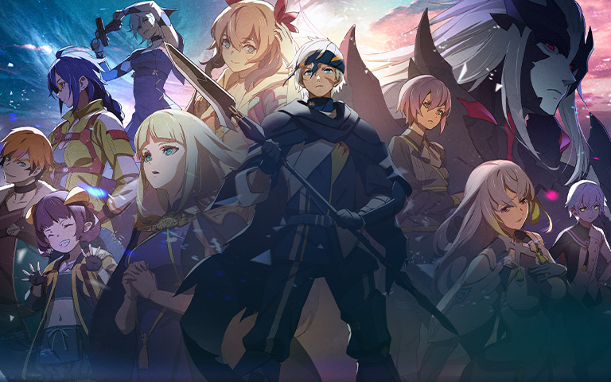

GTA VI : le jeu le plus attendu de la décennie sortira en automne 2025

Sony a essayé d'acquérir l'un des jeux les plus attendus de 2025 Il s'agit de l'un des titres les plus attendus de 2025, Crimson Desert, développé par le studio coréen Pearl Abyss. Un titre ambitieux qui ne cache pas ses inspirations issues de jeux devenus des références tels que Zelda Breath of the Wild ainsi que The Witcher 3, Red Dead Redemption ou Creed. Un open world qui est fortement attendu par les fans et qui n'a pas échappé à Sony. L'entreprise aurait en effet proposé au studio un accord d'exclusivité temporaire sur PS5, pour une durée déterminée. Un accord qui empêcherait donc la sortie du jeu sur Xbox
Grand Theft Auto, souvent abrégé GTA, est une série de jeux vidéo créée par David Jones et Mike Dailly, avant que les différents opus qui la composent ne soient notamment supervisés par les frères Dan et Sam Houser, Leslie Benzies et Aaron Garbut.
Concepteurs : Leslie Benzies, Imran Sarwar, Simon Lashley, Billy Thomson, David Jones
Développeurs : Rockstar Games, Rockstar North ·
Éditeurs : Rockstar Games, Take-Two Interactive, Capcom ·
Commercialisation : Grand Theft Auto
Blue Protocol : le jeu le plus attendu de la décennie sortira en automne 2025

Blue Protocol est un genre d'action RPG, free to play, prenant place dans un univers fantastique. Les joueurs peuvent contrôler différents personnages, ayant chacun une classe particulière avec des équipements spéciaux.
Date de sortie initiale : 14 juin 2023
Développeurs : Bandai Namco Studios, Bandai Namco Online
Plates-formes : PlayStation 5, Xbox Series, Microsoft Windows
Genres : Jeu en ligne massivement multijoueur, Jeu d'aventure ·
Éditeurs : Bandai Namco Holdings, Amazon Games